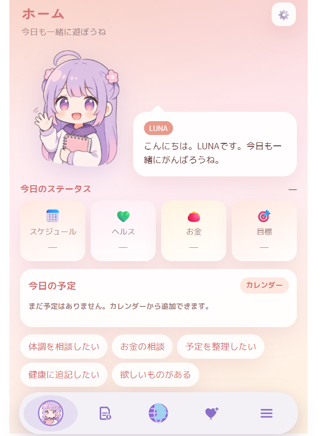
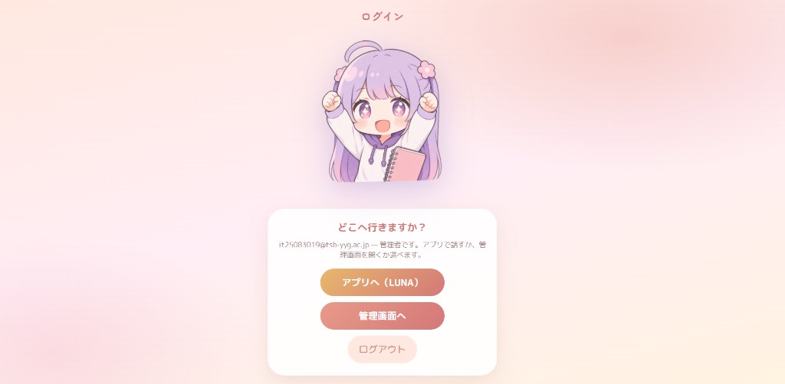
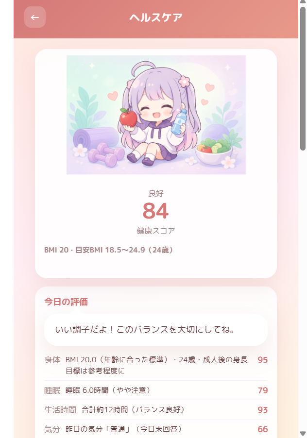

画面イメージ



学習や生活の計画が続きにくい課題に対して、AIコンパニオン「LUNA」とRPG形式の成長体験で、目標を一緒に整理できるWebアプリを開発しました。



勉強や生活の中で「今日何をすればよいか分からない」「計画が続かない」という課題を、会話できるAIコンパニオンと、RPG形式の成長体験で支えるアプリを作りたいと考えました。学校で学んだWeb開発に加え、API設計、データベース、クラウド公開まで一気通貫で実装することを意識しています。
画面を作るだけでなく、認証、API、データベース、外部AIサービスの連携、公開環境まで含めて考える必要があると学びました。特に、利用者が続きやすい体験にするために、機能を増やす前に「会話 → 記録 → 次の行動」の流れを整えることの大切さを実感しました。
Flutterアプリの完成、通知機能、パスワード再設定メール、キャラクター表現（Live2D / 3D）の追加など、実際に毎日使ってもらえる体験へ近づけたいと考えています。